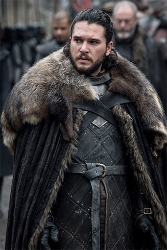

Jon Snow
Jon Snow, born Aegon Targaryen, is the son of Lyanna Stark and Rhaegar Targaryen, the late Prince of Dragonstone. From infancy, Jon is presented as the bastard son of Lord Eddard Stark, Lyanna's brother, and raised alongside his lawful children at Winterfell, the seat of House Stark.
However, his true parentage is kept secret from everyone, including Jon himself, in order to protect him from those that sought the complete annihilation of House Targaryen after Robert's Rebellion and to maintain order in the realm.
In order to escape his bastard status, Jon joins the Night's Watch and is eventually chosen as Lord Commander. However, he is later murdered in a mutiny due to his sympathy for the Free Folk. Using the power of R'hllor, Jon is resurrected by the Red Priestess Melisandre at the behest of Ser Davos Seaworth.
Freed from his Night's Watch vows, Jon joins his "half-sister", Sansa Stark, in building an army and together they retake Winterfell from House Bolton at the Battle of the Bastards, restoring House Stark's dominion over the North. Following the execution of Ramsay Bolton, Jon is declared King in the North.
When the war for Westeros begins, Jon negotiates with Daenerys Targaryen, Rhaegar's sister, to secure her support against the White Walkers, her dragons and abundance of obsidian on her military base of Dragonstone providing a distinct advantage in the Great War.
After successfully capturing a wight and presenting it to Queen Cersei Lannister as proof that the army of the dead is real, Jon pledges himself and his army to Daenerys, whom he falls in love with, subsequently abdicating and being named Warden of the North.
Jon returns to Winterfell with Daenerys and the Targaryen forces, reuniting with his "half-siblings" Arya and Bran Stark, who discovers his true parentage. After his lineage is revealed to him by Samwell Tarly, he fights in the Battle of Winterfell, during which the Night King is defeated and the return of the Long Night is prevented.
Afterwards, Jon aids Daenerys in her resumed campaign to take the Iron Throne and participates in the Battle of King's Landing. However, when Daenerys lays waste to a surrendered King's Landing, Jon attempts, but fails, to prevent his men from sacking the city.
Unable to dissuade Daenerys from this path, a conflicted Jon assassinates her to prevent further carnage, and is taken prisoner by the Unsullied. Following the Great Council of 305 AC, Bran, who is elected as King of the Six Kingdoms, negotiates with the Targaryen allies, and Jon is ultimately sent into exile as a compromise, returning to the Night's Watch for regicide.
After returning to Castle Black, he reunites with his direwolf, Ghost, after which he leads the remaining Free Folk to settle in the thawing free lands.